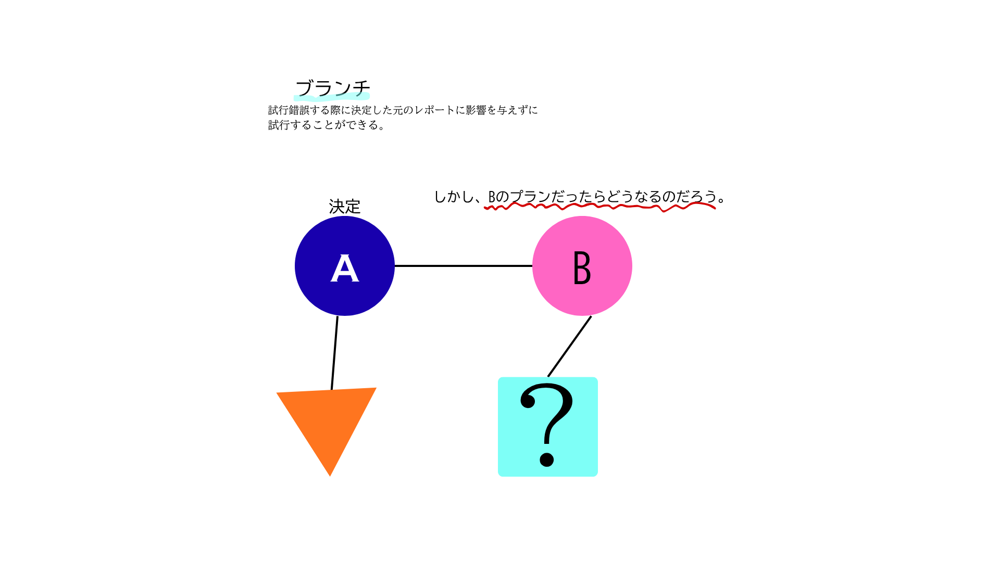
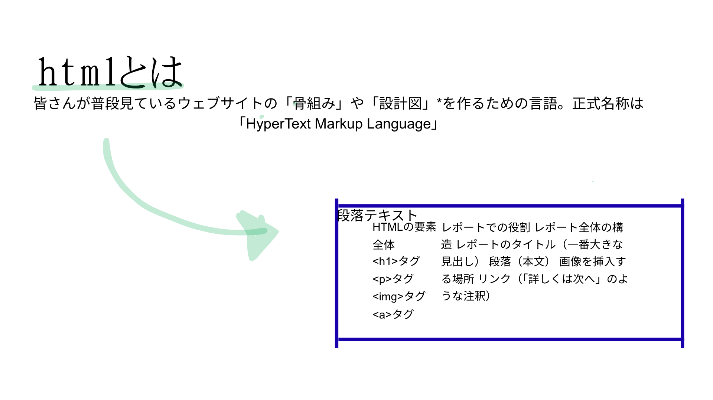

gitについて
プログラムのコードや文書などの「ファイルの変更履歴」を記録・管理するための便利な道具であり一言でいうと、高性能な保存機能」と「共同作業ツール」が合わさったもの.
gitとはタイムマシンのようなものであり、変更する度にその時点をスナップショットを撮ることができるので過去の戻り修正が可能。
ブランチという機能があり試行錯誤の際に元のレポートに影響を与えずに別のパターンを試行することができる。

htmlについて
htmlとは普段見ているウェブサイトの「骨組み」や「設計図」を作るための言語であり、
正式名称は「HyperText Markup Language」という。
役割分担】
HTMLが「骨組み」を作るのに対し、CSS（スタイルシート）は「色や文字の大きさ」
といった「見た目（デザイン）」を担当。
また、JavaScriptは「ボタンを押したら何か反応する」といった「動き（機能）」を担当する。
つまり、HTMLはウェブサイトの「土台」であり、すべての情報が整理された状態で、利用者に正確に伝わる
ようにする、非常に大切な役割を担っている。

まとめ
- gitはGitは「変更履歴をきちんと管理する」ことで、個人での作業を効率化し、
さらにチームでの共同作業を格段に楽にしてくれる、まさにプログラミングや文書作成には欠かせないツールである。
- htmlはウェブサイトの「土台」であり、すべての情報が整理された状態で、
利用者に正確に伝わるようにする、非常に大切な役割を担っている。
さる先生にGIT入門
ドットインストール